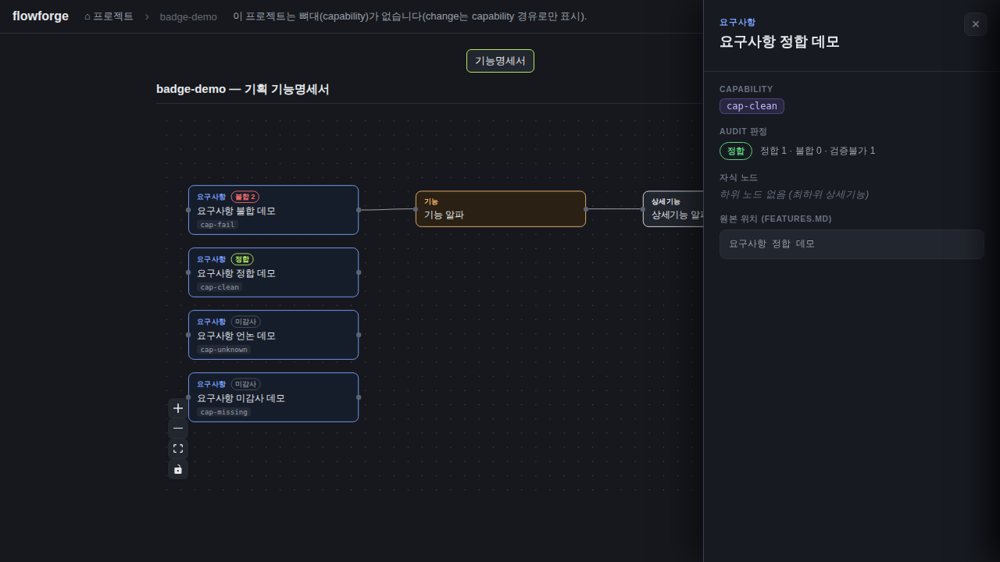

root=server/; scripts.test → NODE_OPTIONS=--experimental-vm-modules jest; 26 suites; devDeps jest@^29.7jest --ci --json 재실측(파이프 없음): 26 suites / 238 tests / 238 passed / 0 failed, EXIT=0
라이브 GET /api/docs/badge-demo/audit-capabilities → 200:
"cap-fail":{"status":"fail","pass":1,"fail":2,"unverifiable":0,"failClaims":[{"claim":"GET /api/missing 라우트","reason":"코드에 라우트 없음"},{"claim":"<img src=x onerror=window.__xss=1> 인젝션클레임",...}]}root=server/; scripts.test → NODE_OPTIONS=--experimental-vm-modules jest; 26 suitesjest 238/238 PASS, EXIT=0
라이브: "cap-clean":{"status":"clean","pass":1,"fail":0,"unverifiable":1,"failClaims":[]} — UNVERIFIABLE은 status를 깎지 않고 건수로만.root=server/; scripts.test → NODE_OPTIONS=--experimental-vm-modules jest; 26 suitesjest 238/238 PASS, EXIT=0
라이브: "cap-unknown":{"status":"unknown","pass":0,"fail":0,"unverifiable":1}root=server/; scripts.test → NODE_OPTIONS=--experimental-vm-modules jest; 26 suitesjest 재실측 개별 단언 전부 passed: - (d) 파일 없음이면 빈 맵 (throw 없음) - (d) 깨진 JSON이면 빈 맵 (throw 없음) - (d) items가 배열이 아니면 빈 맵 (throw 없음) - 통합: audit.json 없는 프로젝트는 빈 맵 200
root=server/; scripts.test → NODE_OPTIONS=--experimental-vm-modules jest; 26 suites라이브 픽스처 audit.json에 scanRoot:"/etc/should-be-ignored" 포함 → 응답은 projDir 기준 정상 집계(경로 미사용). jest: '경로 조작(..) 차단 → 404 (safe-4xx)' passed, '(e) capability·verdict 없는 item, 비객체 item도 안전하게 건너뛴다' passed, '(e) 알 수 없는 verdict 값은 어떤 건수에도 세지 않는다' passed
web/vite.config.ts + 금회 재빌드 dist(npm run build EXIT=0) 정적 서빙 @8891; gstack READY
web/vite.config.ts + 금회 재빌드 dist @8891; gstack READYweb/vite.config.ts + 금회 재빌드 dist @8891; gstack READY[{"kind":"요구사항","hasBadge":true},{"kind":"기능기능","hasBadge":false},{"kind":"상세기능","hasBadge":false},{"kind":"요구사항","hasBadge":true},{"kind":"요구사항","hasBadge":true},{"kind":"요구사항","hasBadge":true}] — 실픽셀은 web-badges-features-view.png 동일 프레임web/vite.config.ts + 금회 재빌드 dist @8891; gstack READY
web/vite.config.ts + 금회 재빌드 dist @8891; gstack READY; grep 재실측: FeatureDetailPanel.tsx 내 audit 소비 코드 존재(L142-171)
web/vite.config.ts + 금회 재빌드 dist @8891; gstack READYweb/vite.config.ts + 금회 재빌드 dist @8891; gstack READY{kind=link}
